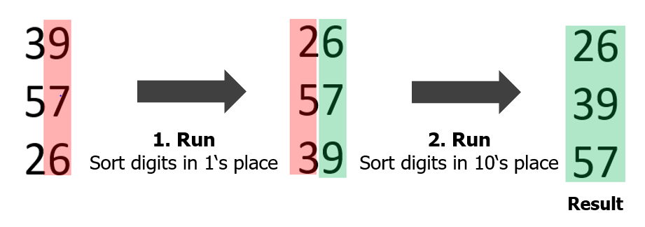
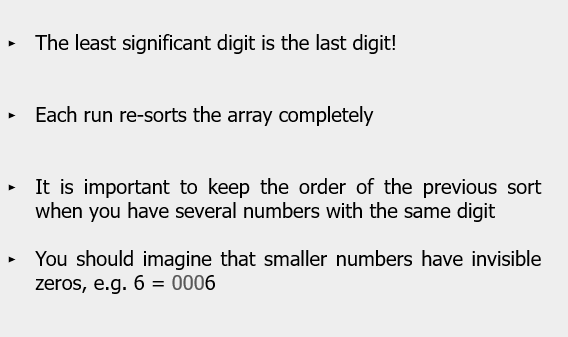

Page 1
Nadiya Davydova
| University of Duisburg-Essen - 2022
Sort the following array in ascending order by applying LSD radix sort:
1145 6 66 165 67
1st run:
2nd run:
3rd run:
6 66 67 165 1145
4th run:
Remark: Leave only one empty space between numbers

